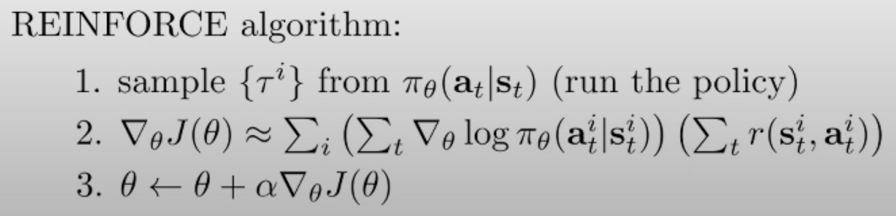

The idea of policy-gradient methods is to change our policy using gradient descent methods such that our RL objective is maximised. Let’s see how.
(Feel free to check out my previous blog to get an introduction to RL, if you are not familiar with the basic ideology.)
Some boring notation
Before starting, let’s just understand what is meant by a “trajectory distribution”. It is the distribution over all possible trajectories, assigning a probability to each one of them. Now, using the Markov assumption, we can write the trajectory distribution for a trajectory \(\tau\) as:
\[ p(\tau) = p_\theta (s_1, a_1, \ldots, s_T, a_T) = p(s_1) \prod_{t=1}^{T} \pi_\theta (a_t | s_t) p(s_{t+1} | s_t, a_t) \]
Also, we can write the total reward of a trajectory as:
\[ r(\tau) = \sum_{t=1}^T r(s_t, a_t) \]
One important thing to note here is that we don’t know anything about \(p(s_1)\) and \(p(s_{t+1} | s_t, a_t)\) at all. But, we can gather samples by interacting with the environment using our policy. Everything we do from now on should respect this assumption.
Some interesting math
We really like expectations in RL but the integrals that follow, not really! Do you know why? Because they are very hard to calculate sometimes. Especially when the variable of integration can assume a lot, lot of possible values. This is where Monte-Carlo helps us out by replacing the integral with summation. In mathematical terms:
\[ \begin{equation*} \begin{split} E_{x \sim p(x)}[f(x)] &= \int_x p(x)f(x)dx \\ &\approx \frac{1}{N} \sum_{i=1}^N f(x_i) \quad (x_i \sim p(x)) \end{split} \end{equation*} \]
Monte-Carlo also helps us approximate certain integrals. For example, if there’s a function \(f(x)\) which can also be broken down as \(p(x)g(x)\), we can easily approximate its integral.
\[ \begin{equation*} \begin{split} \int_x f(x)dx &= \int_x p(x)g(x)dx \\ &\approx \frac{1}{N} \sum_{i=1}^N g(x_i) \quad (x_i \sim p(x)) \end{split} \end{equation*} \]
Evaluating our policy
Just to help you recall, here’s the RL objective defined previously that we need to maximise:
\[ \begin{equation*} \begin{split} J(\theta) &= E_{\tau \sim p_\theta(\tau)} [r(\tau)] = E_{\tau \sim p_\theta(\tau)} \bigg[\sum_t r(s_t, a_t) \bigg] \\ &= \sum_{t=1}^T E_{(s_t, a_t) \sim p_\theta(s_t, a_t)} [r(s_t, a_t)] \text{ (assuming the chain terminates after finite steps)} \end{split} \end{equation*} \]
Now, even though we don’t have \(p(s_1)\) and \(p(s_{t+1} | s_t, a_t)\), we can estimate \(J(\theta)\) by simulating our policy \(N\) times in the environment.
\[ J(\theta) \approx \frac{1}{N} \sum_i \sum_t r(s_{i, t}, a_{i, t}) \]
Calculating the gradient of \(J(\theta)\)
Now, that we know how to calculate \(J(\theta)\), we face the task of estimating \(\nabla_\theta J(\theta)\). Let’s see how:
\[ \begin{equation*} \begin{split} \nabla_\theta J(\theta) &= \nabla_\theta E_{\tau \sim p_\theta(\tau)} [r(\tau)] \\ &= \nabla_\theta \int_\tau p_\theta(\tau) r(\tau)d\tau \\ &= \int_\tau \nabla_\theta p_\theta(\tau) \cdot r(\tau)d\tau \\ &\text{(since gradient is a linear operator, we can shift it inside the integral)} \end{split} \end{equation*} \]
This is bad, since we can’t really integrate over all trajectories, right? Yes, you are right. The solution is Monte-Carlo! But we first need to somehow separate out \(p_\theta(\tau)\) first. This can be done using a nice little thing called as the “log-derivative trick”. By simple calculus, we can write:
\[ \nabla_\theta \log(p_\theta(x)) = \frac{\nabla_\theta p_\theta(x)}{p_\theta(x)} \\ \therefore \nabla_\theta p_\theta(x) = p_\theta(x) \cdot \nabla_\theta \log(p_\theta(x)) \]
Now, the problem is solved.
\[ \begin{equation*} \begin{split} \int_\tau \nabla_\theta p_\theta(\tau) \cdot r(\tau)d\tau &= \int_\tau p_\theta(\tau) \cdot \nabla_\theta \log(p_\theta(\tau)) \cdot r(\tau) d\tau \\ &\approx \frac{1}{N} \sum_{i=1}^N \nabla_\theta \log(p_\theta(\tau_i)) \cdot r(\tau_i) \text{ where } \tau_i \sim p(\tau) \end{split} \end{equation*} \]
But, another problem persists. We still don’t know how to calculate the gradient of \(\nabla_\theta \log(p_\theta(\tau))\). Let’s try to calculate it:
\[ p_\theta(\tau) = p(s_1) \prod_{t=1}^{T} \pi_\theta (a_t | s_t) p(s_{t+1} | s_t, a_t) \\ \log(p_\theta(\tau)) = \log p(s_1) + \sum_{t=1}^T \log \pi_\theta (a_t | s_t) + \sum_{t=1}^T \log p(s_{t+1} | s_t, a_t) \]
Well, well, well. Fortunately, all the problematic terms are independent of \(\theta\), which removes them from the derivative.
\[ \nabla_\theta \log p_\theta(\tau) = \sum_{t=1}^T \nabla_\theta \log \pi_\theta (a_t | s_t) \]
Finally, we can summarise everything as follows:
\[ \begin{equation*} \begin{split} \nabla_\theta J(\theta) &= \nabla_\theta E_{\tau \sim p_\theta(\tau)} [r(\tau)] \\ &= E_{\tau \sim p_\theta(\tau)} [\nabla_\theta \log p_\theta(\tau) r(\tau)] \text{ (using log-derivative trick)} \\ &= E_{\tau \sim p_\theta(\tau)} \bigg[ \bigg( \sum_{t=1}^T \nabla_\theta \log \pi_\theta (a_t | s_t) \bigg) \bigg( \sum_{t=1}^Tr(s_t, a_t) \bigg) \bigg] \\ &\approx \frac{1}{N} \sum_{i=1}^N \bigg( \sum_{t=1}^T \nabla_\theta \log \pi_\theta (a_{i,t} | s_{i,t}) \bigg) \bigg( \sum_{t=1}^Tr(s_{i,t}, a_{i,t}) \bigg) \end{split} \end{equation*} \]
REINFORCE
Now that we have found out a tractable way to estimate the gradient of the policy, we can just take descent steps and improve our policy. The summary is as follows:

Intuition behind REINFORCE
What if we use the maximum likelihood objective to train our policy, the gradient would turn out to be:
\[ \nabla_\theta J(\theta) \approx \frac{1}{N} \sum_{i=1}^N \bigg( \sum_{t=1}^T \nabla_\theta \log \pi_\theta (a_{i,t} | s_{i,t}) \bigg) \]
The above equation suggests that we are trying to tune our policy such that the probability of observing the observed samples increases. This is what “maximising log-likelihood” means, right? Actually, this makes sense for supervised learning settings where we have only good examples (for eg. an image from the MNIST data is a good example of a digit). However, using this objective for improving our policy is non-sensical because this means we are changing policy such that the chances of observing trash trajectories that we just observed increases. The quality of observed data matters. In supervised settings, it is high. But in our case, not quite.
On the other hand, our policy gradient looks like:
\[ \nabla_\theta J(\theta) \approx \frac{1}{N} \sum_{i=1}^N \bigg( \sum_{t=1}^T \nabla_\theta \log \pi_\theta (a_{i,t} | s_{i,t}) \bigg) \bigg( \sum_{t=1}^Tr(s_{i,t}, a_{i,t}) \bigg) \]
This can be seen as a weighted log-likelihood function, weighted by the rewards of the corresponding trajectories. In other words, we can say that we plan to update the policy so as to increase OR decrease the probabilities of observed trajectories depending on their reward value. Now this extra reward term is what makes maximum likelihood estimation applicable to our setting. We don’t want to blindly increase the chances of all observed trajectories. We acknowledge the uselessness of some of them and want to decrease their chances while increasing the chances for those that give higher total rewards. This makes sense.
But wait, what’s wrong with it?
Here’s the gradient we recently derived:
\[ \nabla_\theta J(\theta) \approx \frac{1}{N} \sum_{i=1}^N \bigg( \sum_{t=1}^T \nabla_\theta \log \pi_\theta (a_{i,t} | s_{i,t}) \bigg) \bigg( \sum_{t=1}^Tr(s_{i,t}, a_{i,t}) \bigg) \]
So, remember the cute little log-derivative trick we applied a while ago? Turns out that there’s a big problem when using it. It is a very high variance estimator. The log-derivative trick is also called the REINFORCE estimator or the score-function estimator.
\[ \nabla_\theta E_{\tau \sim p_\theta(\tau)} [r(\tau)] = E_{\tau \sim p_\theta(\tau)} [r(\tau)\nabla_\theta log(p_\theta(\tau)) ] \]
However, this is zero-bias but high-variance estimator, meaning that if the number of samples is infinite, it will eventually give the accurate estimation, but for lesser number of samples, it might provide varied answers. For reasons behind this, see this link. Such a high variance estimator would work well only if we have a lot, lot of samples. which is not usually feasible.
This means that we need to find a better estimator to estimate the gradient OR reduce the variance of our REINFORCE estimator.
Tricks to reduce variance
Causality Assumption
This assumption says that “the present policy cannot affect previous rewards.” Come on man, this is always true, provided that we don’t do time travel. Also, note that this is not the same as the Markov property, which says that “the states in the future are independent of the past given the present.”
We can remove some unnecessary terms from our gradient estimation by using this “causality” assumption as follows:
\[ \begin{equation*} \begin{split} \nabla_\theta J(\theta) &\approx \frac{1}{N} \sum_{i=1}^N \bigg( \sum_{t=1}^T \nabla_\theta \log \pi_\theta (a_{i,t} | s_{i,t}) \bigg) \bigg( \sum_{t=1}^Tr(s_{i,t}, a_{i,t}) \bigg) \\ &= \frac{1}{N} \sum_{i=1}^N \sum_{t=1}^T \nabla_\theta \log \pi_\theta (a_{i,t} | s_{i,t}) \bigg( \sum_{t'=1}^Tr(s_{i,t'}, a_{i,t'}) \bigg) \\ &= \frac{1}{N} \sum_{i=1}^N \sum_{t=1}^T \nabla_\theta \log \pi_\theta (a_{i,t} | s_{i,t}) \bigg( \sum_{t'=\textcolor{red}{t}}^Tr(s_{i,t'}, a_{i,t'}) \bigg) \end{split} \end{equation*} \]
Baseline Trick
Remember the intuition behind REINFORCE? The idea was to “change the policy such that the probability of trajectories with higher rewards and vice-versa”. What if we modify this statement slightly? The new idea is to “change the policy such that the probability of trajectories with rewards higher than average and vice-versa”. This is better, isn’t it? So, the new gradient becomes:
\[ \nabla_\theta J(\theta) = \frac{1}{N} \sum_{i=1}^N \nabla_\theta log(p_\theta(\tau_i)) \cdot (r(\tau_i) \textcolor{red}{- b}) \\ \text{where } b=\frac{1}{N} \sum_{i=1}^N r(\tau_i) \]
But …
Is this new estimator still unbiased?
Yes! Because the expectation of \(E[\nabla_\theta log(p_\theta(\tau)) \cdot b]\) is zero. Let’s see how:
\[ \begin{equation*} \begin{split} E[\nabla_\theta log(p_\theta(\tau)) \cdot b] &= \int p_\theta(\tau)\nabla_\theta \log p_\theta(\tau)b d\tau \\ &= \int \nabla_\theta p_\theta(\tau)b d\tau \\ &= b \nabla_\theta \int p_\theta(\tau) d\tau \\ &= b \nabla_\theta 1 \\ &= 0 \end{split} \end{equation*} \]
This means that the addition of \(b\) doesn’t affect the bias of the old estimator. Good.
Does this new estimator have lower variance?
For the sake of notational simplicity, let’s keep \(g(\tau) = \nabla_\theta log(p_\theta(\tau))\). Let’s calculate the variance now:
\[ \nabla_\theta J(\theta) = E_{\tau\sim p(\tau)} [g(\tau) (r(\tau) - b)] \]
Using the identity \(Var(X) = E[X^2] - E[X]^2\), we can write:
\[ \begin{equation*} \begin{split} \text{New Var} &= E_{\tau\sim p(\tau)} [g(\tau)^2 (r(\tau) - b)^2] - E[g(\tau) (r(\tau) - b)]^2 \\ &= E_{\tau\sim p(\tau)} [g(\tau)^2 (r(\tau) - b)^2] - E[g(\tau) (r(\tau))]^2 \text{ using previous result} \\ &= E_{\tau\sim p(\tau)} [g(\tau)^2 r(\tau)^2] - 2bE_{\tau\sim p(\tau)} [g(\tau)^2 r(\tau)] + b^2E_{\tau\sim p(\tau)} [g(\tau)^2] - E[g(\tau) (r(\tau))]^2 \\ &= \textcolor{red}\{E_{\tau\sim p(\tau)} [g(\tau)^2 r(\tau)^2] - E[g(\tau) (r(\tau))]^2 \textcolor{red}\} - 2bE_{\tau\sim p(\tau)} [g(\tau)^2 r(\tau)] + b^2E_{\tau\sim p(\tau)} [g(\tau)^2] \\ &= \text{Old Var} - 2bE_{\tau\sim p(\tau)} [g(\tau)^2 r(\tau)] + b^2E_{\tau\sim p(\tau)} [g(\tau)^2] \end{split} \end{equation*} \]
Now, if we want the baseline to reduce the variance, the new variance has to be smaller.
\[ \text{New Var} - \text{Old Var} < 0 \\ - 2bE_{\tau\sim p(\tau)} [g(\tau)^2 r(\tau)] + b^2E_{\tau\sim p(\tau)} [g(\tau)^2] < 0 \]
Assuming positive rewards, we can say that \(b>0\). This means that:
\[ 0 < b < \frac{2E_{\tau\sim p(\tau)} [g(\tau)^2 r(\tau)] }{ E_{\tau\sim p(\tau)} [g(\tau)^2]} \]
Our baseline \(b = E_{\tau\sim p(\tau)} [r(\tau)] \approx \frac{1}{N} \sum_{i=1}^N r(\tau_i)\) will satisfy this condition only if \(cov[(g(\tau)^2, r(\tau)] < -E[g(\tau)^2 \cdot r(\tau)]\) which is reasonable since the magnitude of gradient of log probs is more likely to be positively correlated with the rewards than not (maybe not that likely in the beginning but definitely in the later stages). This has been supported by experiments in practical scenarios.
Is “average” the best (no pun intended!) possible option? Can we do better?
Yes. Let’s calculate the optimal value of the baseline by minimising the \(\text{New Var}\).
\[\begin{equation*} \begin{split} \text{New Var} &= \text{Old Var} - 2bE_{\tau\sim p(\tau)} [g(\tau)^2 r(\tau)] + b^2E_{\tau\sim p(\tau)} [g(\tau)^2] \\ \frac{d\text{ New Var}}{db} &= - 2E_{\tau\sim p(\tau)} [g(\tau)^2 r(\tau)] + 2bE_{\tau\sim p(\tau)} [g(\tau)^2] = 0 \\ b &= \frac{E_{\tau\sim p(\tau)} [g(\tau)^2 r(\tau)]}{E_{\tau\sim p(\tau)} [g(\tau)^2]} \end{split} \end{equation*}\]
So, so, so, the baseline depends on \(g(\tau)\) which might make it slightly compute-intensive. So, using “average” as the baseline can be a efficient yet good option. Depends on the computational constraints of the problem.
Thanks for reading! Hope you liked it. If you find any mistakes or inaccuracies, feel free to send an email to shah.15@iitj.ac.in.